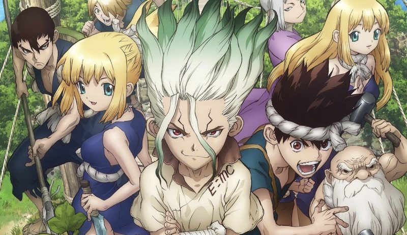
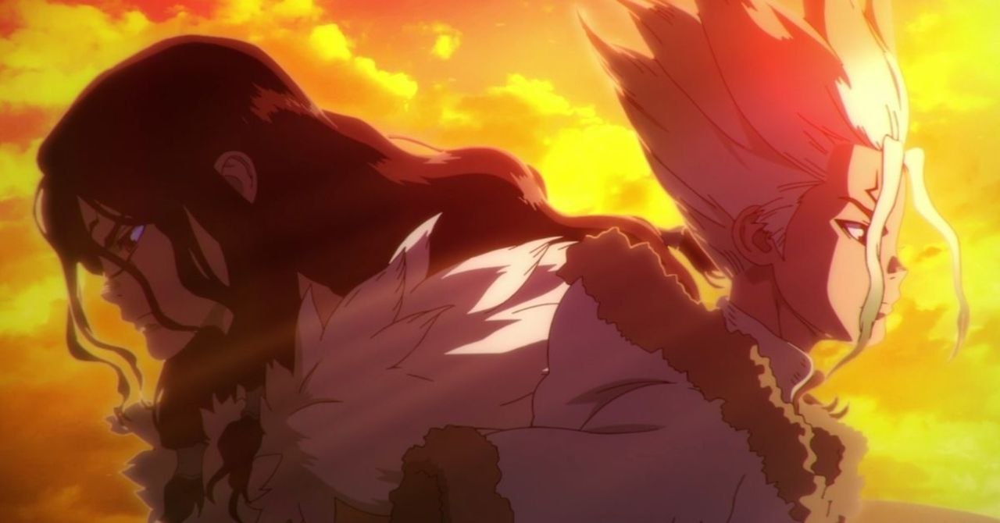
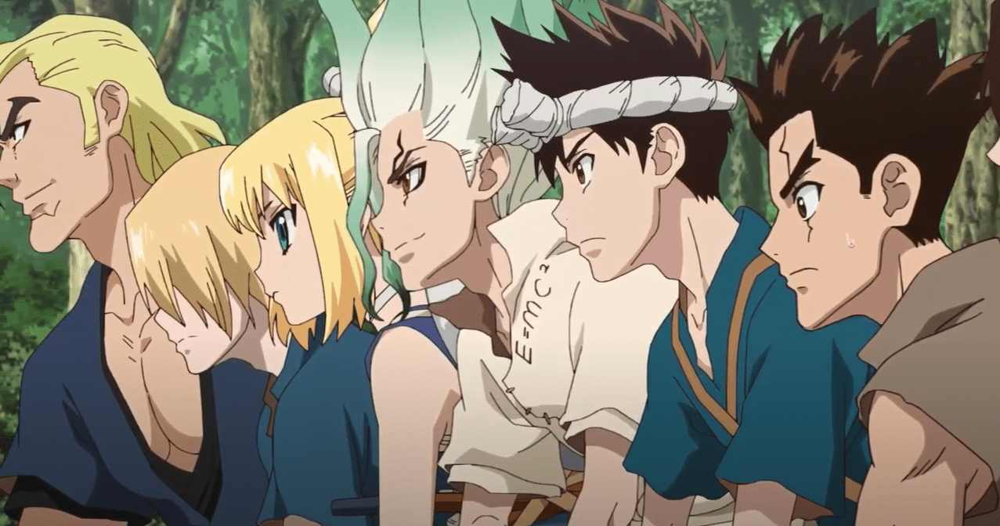

Dr. Stone

Dr. Stone Season 2
El día que Taiju Oki, un adolescente fuerte pero algo palurdo, se decide por fin a declararle su amor a Yuzuriha, sucede algo radical e inesperado: justo un segundo antes de la declaración, causas desconocidas llevan al total de la humanidad a convertirse instantáneamente en piedra.
Después de 3.689 años y 158 días, durante los que ha luchado por no perder la consciencia y desaparecer, Taiju finalmente emerge de la piedra y vuelve a la normalidad. Aunque sólo para descubrir que el resto de la humanidad jamás despertó de su sueño pétreo.
Luego se entera de que su amigo Senku, un genio absoluto de vocación científica y mentalidad mucho más pragmática, también ha sobrevivido. Ahora es su obligación rescatar a la gente y crear un nuevo mundo huyendo de la superstición y la magia y usando la única herramienta realmente poderosa: la ciencia.
El anime es una completa crítica al estilo de vida que llevamos actualmente, nos presenta dos polos opuestos y la oportunidad de volver a empezar como humanidad siendo recordado por algunos los errores pasados que se vivieron en la antigüedad. Senku representa a un “Frankestein” que tiene a la ciencia como su aliada.
En cada capítulo aprenderás algo nuevo sobre procesos científicos que no debes realizar en casa pues ahora son ilegales si no se es un experto, verás como los personajes son guiados por Senku quien 10,000 millones por ciento está convencido que el camino correcto es uno que lleva a la humanidad a evolucionar y no la que se queda en un mundo de piedra.
Luego de que terminara la guerra entre el bando de Senku, el protagonista, y su enemigo inicial, este adelanto que publicaron en redes sociales y otras plataformas genera mucha curiosidad. Y es que este genio de la ciencia se le puede ver en compañía de sus amigos y aliados montados en un barco pirata, dispuestos a emprender su nueva aventura.
El llamado mundo de piedra, que en un inició mostró el universo de Dr. Stone, va evolucionando poco a poco y con ello los protagonistas tendrán muchos retos y encuentros con nuevos personajes por delante. De hecho, al final del tráiler es posible ver a un hombre petrificado, lo cual obtuvo reacciones muy positivas de aquellos fans que llevan tiempo siguiendo el manga de la obra.
